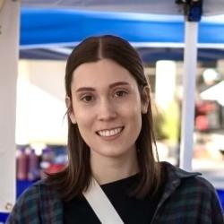
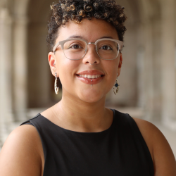
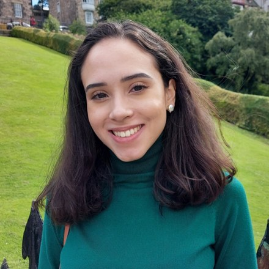
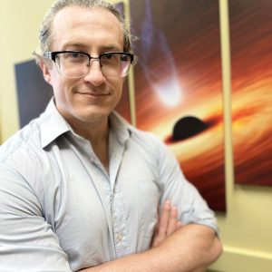
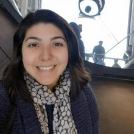
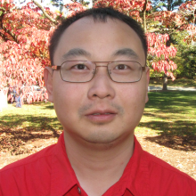

Davis Group

Katie is a postdoctoral VITA Fellow in the UVA astronomy department who participates in the group. She came to UVA from the Rochester Institute of Technology, where she used the Bothros code to generate images and spectra of merging binary supermassive black holes.

Tegan is a UVA astronomy graduate student who joined the group in the fall of 2025. His research focuses on spectral post-processing of numerical simulations of X-ray binaries, supermassive black hole binaries, and tidal disruption events, using the Athena++ Monte Carlo module and the Blacklight code to compute synthetic spectra and images that can be compared with observations.

Maria Renee joined the group shortly after arriving as a UVA astronomy graduate student in the fall of 2023. Her research uses radiation magnetohydrodynamic simulations with Athena++ and AthenaK to follow the formation of an accretion flow from the fallback debris after a tidal disruption event, and to explore the role that magnetic fields play in the dynamics of accretion and outflows in these systems.
Connor joined the group shortly after arriving as a UVA astronomy graduate student in the fall of 2019. His first research project used semi-analytic solutions and Monte Carlo methods to study the radiation transfer of Lyman α in the irradiated atmospheres of extrasolar planets. He was co-advised on this project by Phil Arras. Connor's second research project involved using a combination of MESA hydrodynamic calculation results and simulations with the Athena++ radiation hydrodynamics modules to study the evolution of photospheric radius expansion bursts on the surfaces of neutron stars. After leaving UVA, he started a postdoctoral position at Michigan State University, where he works with the TARDIS collaboration.

Sergei joined the group in October of 2021 as a research associate, having previously been a postdoctoral researcher at the Institute of Astronomy at the University of Cambridge. His primary research focus while at UVA was studying line-driven winds from active galactic nuclei and massive stars. Sergei performed simulations with the Athena++ code using a combination of his own module for solving the line driving force coupled with the built-in radiation hydro module to solve for the evolution of ionizing radiation. After leaving UVA, he started a new postdoctoral position at the University of Alabama.
Xiaoshan was a graduate student in the UVA astronomy department who defended her thesis in June of 2023. Her first projects primarily focused on studying the role radiation and cosmic ray pressure play in driving galactic outflows. More recently, her research has shifted to transients such as tidal disruption events and quasi-periodic eruptions. She uses the Athena++ radiation and cosmic ray modules to perform large parallel numerical magnetohydrodynamic simulations of these systems. After leaving UVA, she started a new position as a postdoctoral fellow at Caltech. She is currently a postdoctoral fellow at the University of California, Berkeley.

Bri was a UVA astronomy graduate student who defended their PhD thesis in May 2023. Their work focused on bridging the gap between numerical simulations and observational X-ray spectra of accreting black hole sources. They used the Athena++ Monte Carlo module to generate synthetic X-ray spectra from Athena++ simulations of moderately super-Eddington black hole accretion and found that they agree well with NuSTAR and RXTE spectra of ultraluminous X-ray sources. They also used accretion disk spectral models to fit the spectrum of the black hole X-ray binary GRS 1915+105 and placed new constraints on the black hole spin. Since getting their PhD, Bri has been working as a contracted research software engineer for DOE-funded projects like the Community Integrated Distributed Energy Resource (CIDER) project which helps electric cooperatives figure out how solar panels and battery storage systems could improve community resilience against power outages and also save everyone some money. Bri's also using their skills to help local mutual aid groups and nonprofits become more resilient to authoritarianism and capitalism, and still busts out their telescope to show people how beautiful the moon and planets are.

Dong came to the group as a research associate after completing his graduate studies at the Ohio State University. His research while at UVA focused primarily on numerical simulations of galaxy-scale outflows and feedback from star formation, including both radiation and supernova feedback. After leaving UVA, he was a postdoctoral researcher at the University of Michigan, before moving on to a career in data science, including work as an applied scientist for Amazon. He is currently the founder and CEO of Ace Rocket, an AI-powered education platform.
Many undergraduate students from UVA and elsewhere have worked within the group on supervised research projects. This includes a number of students doing research for credit in tutorial and senior thesis courses as well as summer internships.
The following is a list of current and former undergraduates who have worked with the group, including links to senior thesis projects:
Diego Gomez, Sofia Rio, Colin Surovell, Zaina Tarafder, Aeden Rask, Julien Kearns, Nadara Hudson, Danny Western, Louis Seyfritz, Alex Palaoro, Mint Tositrakul, Maria Renee Meza, Riley May, Danny Devlin,
Camryn Phillips, Delmont Irving, Efrain Perez, Dirk Pitts, Eric Rohr, Molly Childers, Nicholas Van Den Nieuwenhuizen, Yara Yousef, Robin Leichtnam, Kristina Crawley, Kimara Pruitt, Eli Golub, Temitope Olantinwo, Zaniyah Dock, Melanie Grierson, Rachael Sproule, and Samer El-Abd.